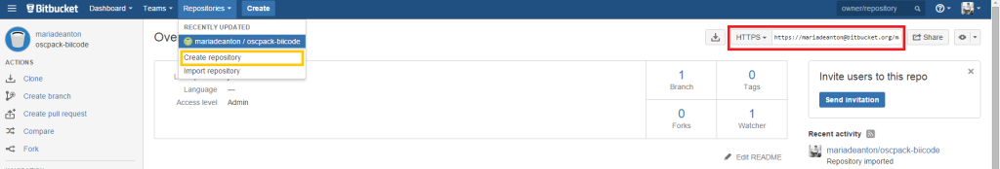
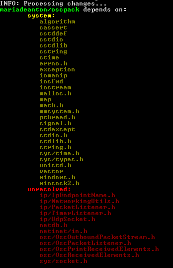
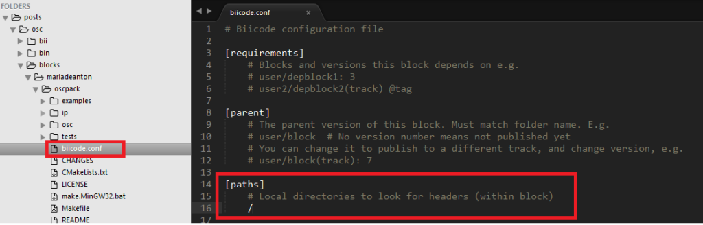
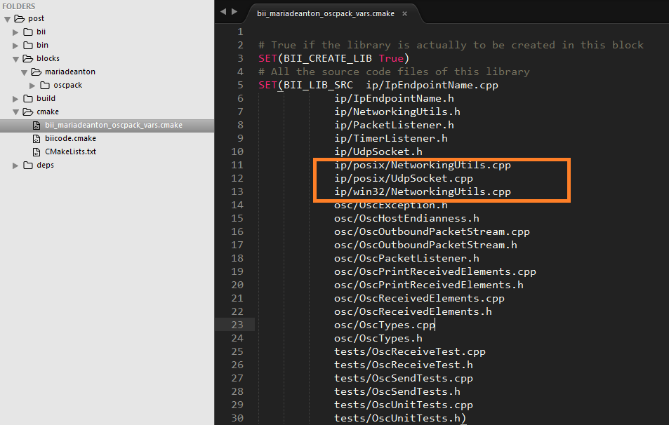
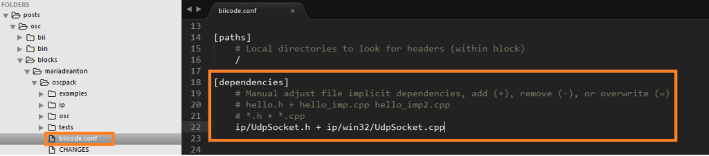

Updated for biicode 2.0!
As the headline states, this is the fourth example about how to upload libraries to biicode. If you’ve done this kind of thing before, keep reading, we’ll explain how to upload Oscpack lib. Otherwise, you may be interested on reading first any previous articles of the series:
- Example 1: Json11 by Dropbox
- Example 2: Box2D by Erin Catto
- Example 3: Little CMS by Marti Maria
Upload to biicode Oscpack
Oscpack is a set of C++ classes for packing and unpacking Open Sound Control (OSC) packets. Developed by Ross Bencina, Oscpack proved to be an essential library requested in our forum. As Ross Bencina explains, Oscpack includes a minimal set of UDP networking classes for Windows and POSIX. It enables an easy way to construct, send, receive and parse OSC packets.
Basics
Install biicode and make sure you’ve got the latest version of the library you want to use. To keep the biicode version updated, fork or clone the library on a public git repository (as Bitbucket or Github). Oscpack 1.1.0 is available on google code hosting. This guide uses Bitbucket, but the same steps apply to Github and Travis CI fans.
Create a new BIICODE project:
1 2 3 4 | ~$ bii init osc ~$ cd osc ~$ bii new mariadeanton/oscpack ~$ cd blocks/mariadeanton/oscpack |
Put the content of the latest version of Oscpack into blocks/mariadeanton/oscpack folder. Adapt the readme file to notify users the specifics of the lib and its biicode adaptation.
Create a new Bitbucket repository:

Copy the HTTPS or SSH address as marked in red on the image. You will need this on the steps below to establish a “remote origin”:
1 2 3 4 5 | git init git add . git commit -m "first commit" git remote add origin git@bitbucket.org:mariadeanton/oscpack-biicode.git git push -u origin master |
Once first commit is pushed the original library is ready to be adapted.
Specifics
A. Check if biicode finds the links between sources
Execute bii deps to get all information related to biicode’s dependency scanning:
1 | bii deps |

Seems we’ve got to include the current working directory into dependency search and build.
If you execute:
1 | bii cpp:build |
It won’t compile.
A.1. Create a biicode.conf file into blocks/username/blockname/ folder
and write into its [paths] section:
1 | / |

B. Build and compile
B.1. Ensure original code logic remains
Just with these updates, both biicode and compiler know they should include current source directory, but bii cpp:build can’t compile properly, why is this happening?
Check out the previous CMakeLists.txt, it separates the versions of NetworkingUtils.cpp depending on whether the OS is Win32 or POSIX based. It also includes winmm library when using Win32 . As Ross Bencina himself explains “the IpSystemTypePath selects the correct ones based on the current platform”.
Update your CMakeLists.txt to ignore posix folder content while on Win32 and vice versa. It also adds a line after ADD_BIICODE_TARGETS to link winmm lib on Win32:
1 2 3 4 5 6 7 8 9 10 11 12 13 14 15 16 17 18 19 20 21 22 | IF(BIICODE) include(${CMAKE_HOME_DIRECTORY}/biicode.cmake) # Initializes block variables INIT_BIICODE_BLOCK() # Discard Posix Folder while on Win32 and vice versa IF(WIN32) list(REMOVE_ITEM BII_LIB_SRC ip/posix/NetworkingUtils.cpp ip/posix/UdpSocket.cpp) ELSE() list(REMOVE_ITEM BII_LIB_SRC ip/win32/NetworkingUtils.cpp ip/win32/UdpSocket.cpp) ENDIF() ADD_BIICODE_TARGETS() # Link winmm lib while on Win32 IF(WIN32) TARGET_LINK_LIBRARIES(${BII_LIB_TARGET} PUBLIC winmm) ENDIF() # Include base block directory TARGET_INCLUDE_DIRECTORIES(${BII_LIB_TARGET} PUBLIC ${CMAKE_CURRENT_SOURCE_DIR}) ELSE() # Previous CMakeLists.txt goes here |
B.2. See for yourself what’s going on
Execute:
1 | ~$ bii cpp:build |
(A successful build happens on POSIX OS but not on Win32)
Let’s check the bii_username_blockname_vars.cmake file located into the cmake folder on your project. You can see all source code files linked here.

There it is! ip/win32/UdpSocket.cpp is missing.
B.3. Manually specify dependencies
Establish a dependency between ip/UdpSocket.h and ip/win32/UdpSocket.cpp just writing in the [dependencies] section of your biicode.conf file:
1 | ip/UdpSocket.h + ip/win32/UdpSocket.cpp |

Save all changes and you’re ready to go!
C. Publish
Push your changes to Bitbucket and publish to biicode, Oscpack library is ready to be reused!
1 | bii publish |
Once you’ve tested Oscpack library on the different OS you can publish it as stable:
1 | bii publish --tag=STABLE |
D. Enjoy!
Use Oscpack library on biicode. For example, you can include:
1 2 3 | #include "Maria/oscpack/osc/OscPrintReceivedElements.h" //or #include "Maria/oscpack/ip/UdpSocket.h" |
If you liked this post please comment below. If you want to try biicode just click on the sidebar button and if you have any doubts check our docs and forum.
Related Posts